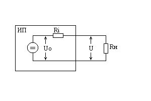

Методика измерения внутреннего сопротивления источника питания
На практике в ряде случаев необходимо знать нагрузочную способность источника питания (ИП), например, насколько его выходное напряжение уменьшается при подключении нагрузки или какое предельное значение тока он может выдавать. Эта способность может быть оценена по известному внутреннему сопротивлению ИП.

Внутреннее сопротивление (Ri) ИП может быть определено следующим способом с использованием закона Ома и второго правила Кирхгофа [1]:
Ri = Rн (U0 /U - 1)
Точность определения Ri зависит от точности вольтметра (чем она выше, тем точнее можно измерить U0 и U и определить Ri) и сопротивления нагрузки Rн (чем оно меньше, тем больше уменьшается выходное напряжение ИП и тем точнее можно определить Ri).
Например, для бытовой сети переменного тока напряжением 220 вольт частотой 50 Гц:
При подключении к этой сети нагрузки с сопротивлением 0.76 Ом (условие максимальной передачи мощности) амплитуда тока (фактически, короткого замыкания) составит ≈200 А, а при подключении нагрузки с сопротивлением, близким к нулю (короткое замыкание), амплитуда тока может достигать ≈400 А (к вопросу о том, "какая сила тока в розетке").
Ссылки:
19.11.2005
21.06.2010
Альтернативные источники
энергии
Компьютеры и
Интернет
Магнитные поля
Механотронные системы
Перспективные
разработки
Электроника и технология